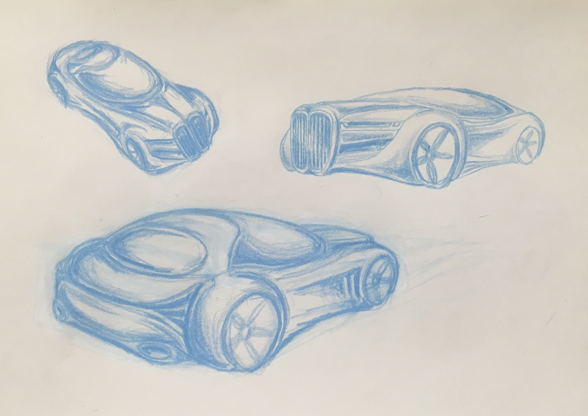
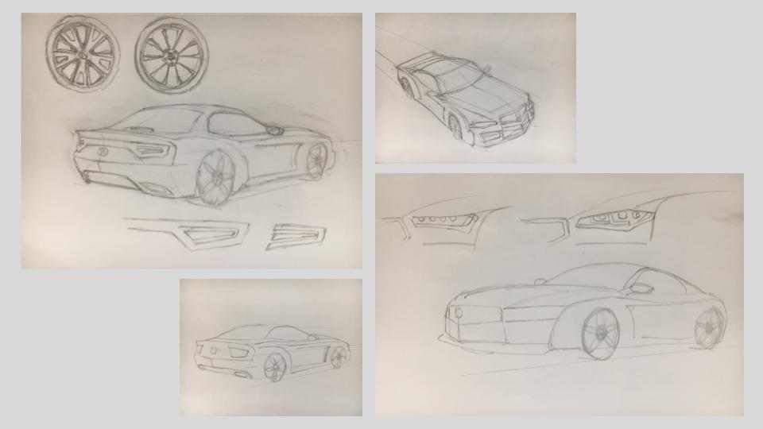
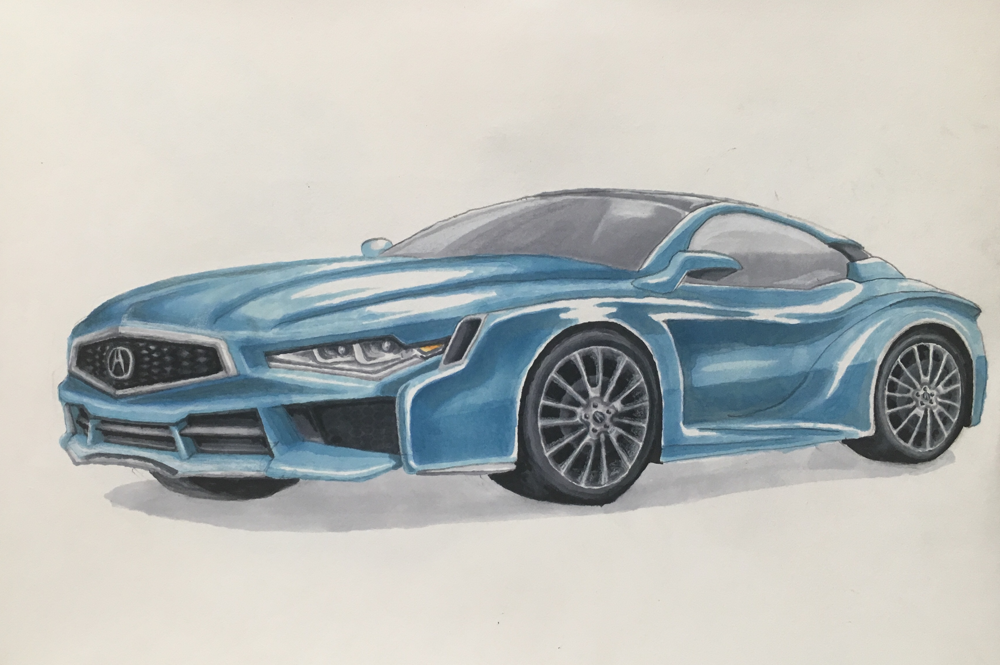
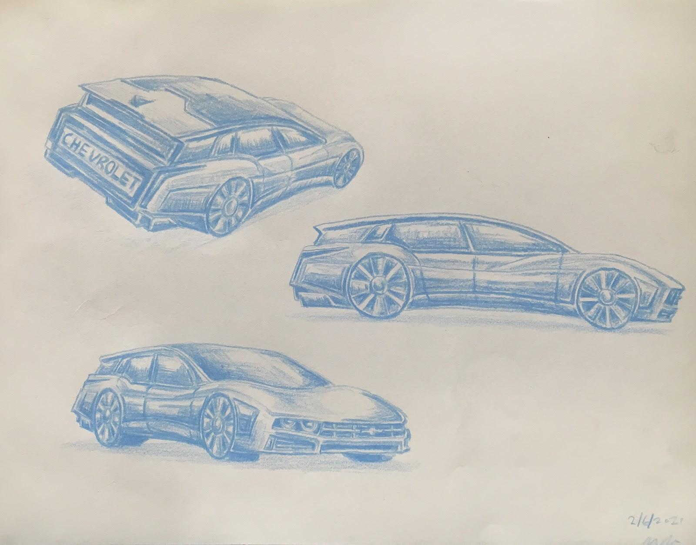
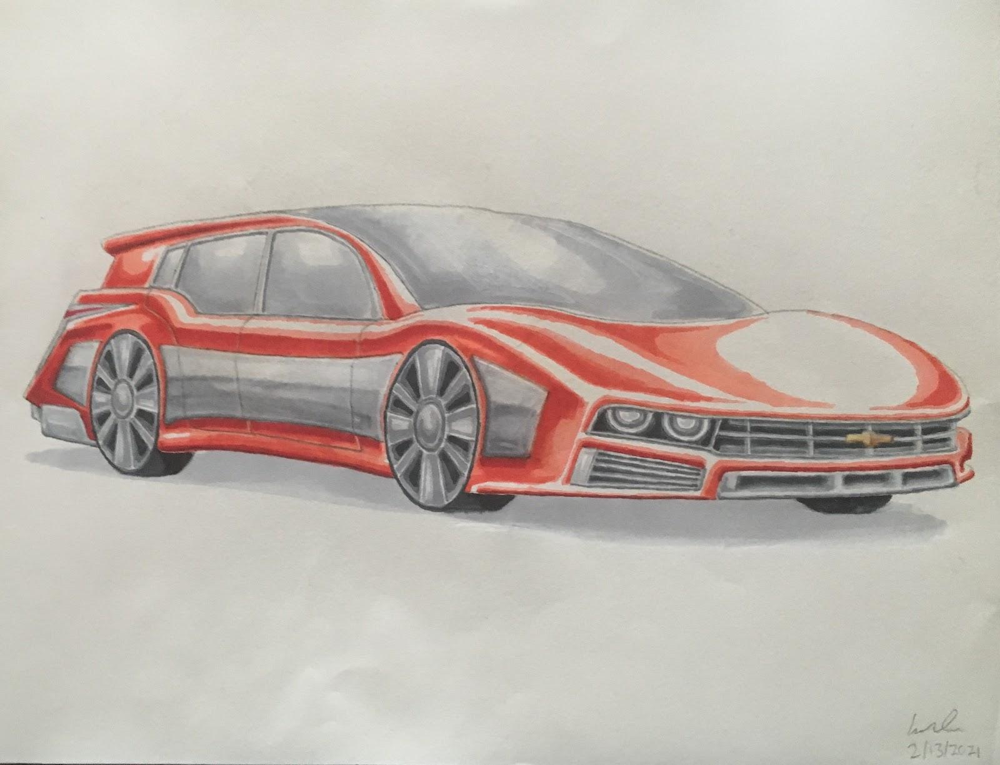

AP 2D Art & Design Portfolio
This is a select collection of work I created during my senior year of highschool for my AP Art portfolio. Since I have always been interested in automobiles, I decided to make my portfolio around transportation design. My designs are inspired by various factors, from eras in design to those of past vehicles.
BMW Concept Sketches
Colored Pencil, 11" x 14"
Original design sketches in different perspectives.

BMW Concept
Marker, Colored Pencil, 11" x 14"
This is an original design of a concept BMW M Car, a futuristic super car that pays homage to the BMW 328. I focused on experimental design elements such as the bubble cockpit design for the cabin, enlarged and rounded wheel arches, and an aggressive grill. I am fascinated by metallic textures and trompe l’oeil painting techniques, so I used sharp lighting to help build a metallic effect along the body and other chrome surfaces, and intense contrast to emphasize the reflective metallic surface.

Acura Concept Sketches
Graphite, 5.5" x 8.5"
Original design sketches in various perspectives.

Acura Concept
Marker, Colored Pencil, 11" x 14"
I designed a sleek concept coupe that would fit into Acura’s current line up which lacks a personal luxury coupe. My design takes from Acura’s signature style through the aggressive grill, and sharp, angular LED headlights, but also plays with a contoured fender and side, referencing classic muscle cars. Light plays a major role in the form, with the streak of light across the grill and the dark contrasts along the sides and fenders. I have recently discovered alcohol based markers and in this illustration I focused on achieving sharp edges and layering to create darker, richer shades.

Chevrolet Concept Sketches
Colored Pencil, 11" x 14"
Various perspectives define the shape and design of the vehicle.

Chevrolet Wagon Concept
Marker, Colored Pencil, 11" x 14"
Sharp contrasts in color, shadow, and highlights creates metallic effect. Chrome detail emphaiszes 70s design cues, while the rounded body creates a modern and aerodynamic appearance.